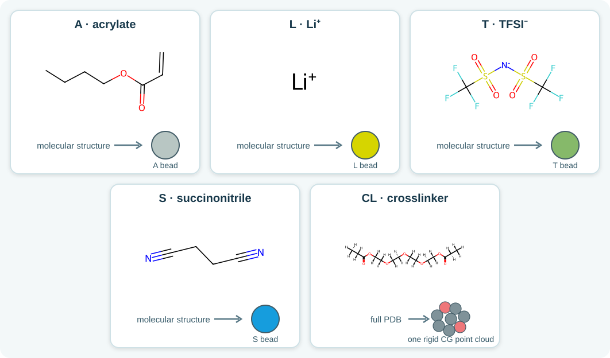
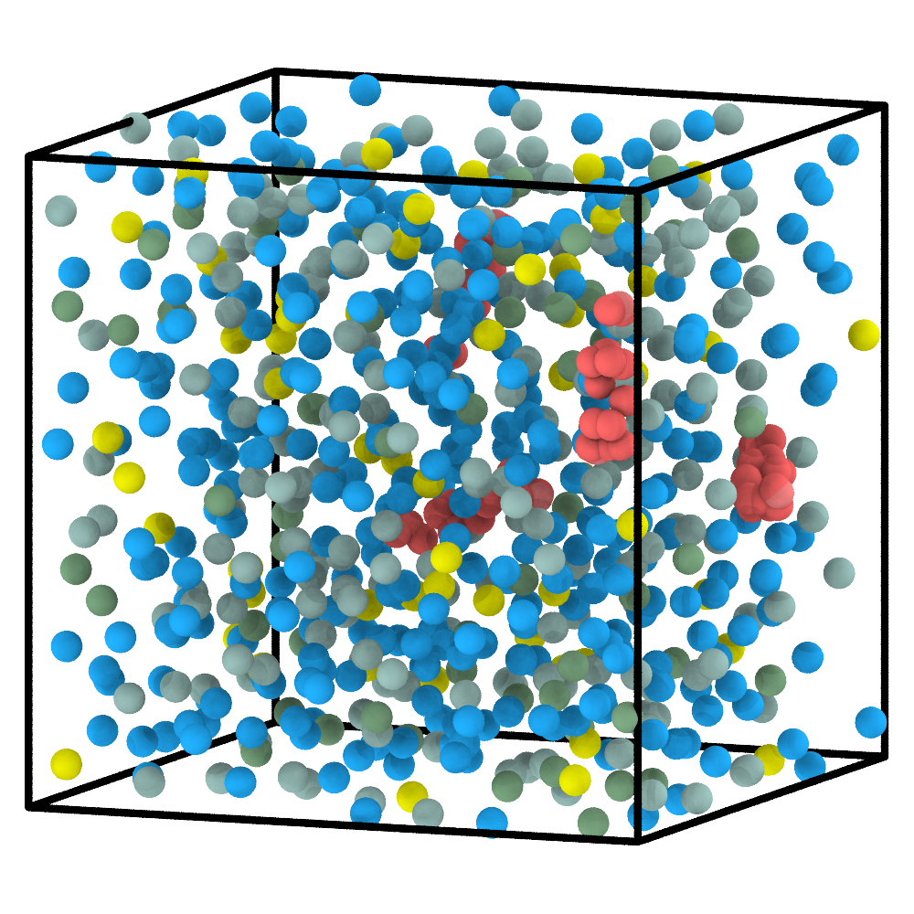
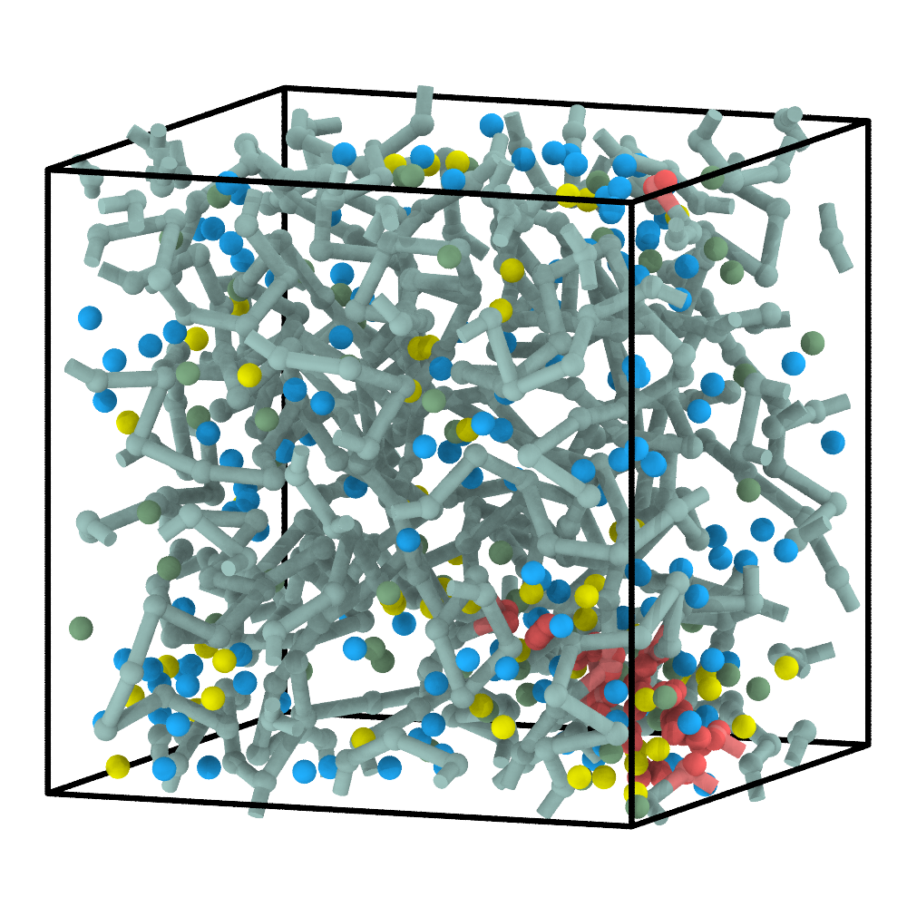
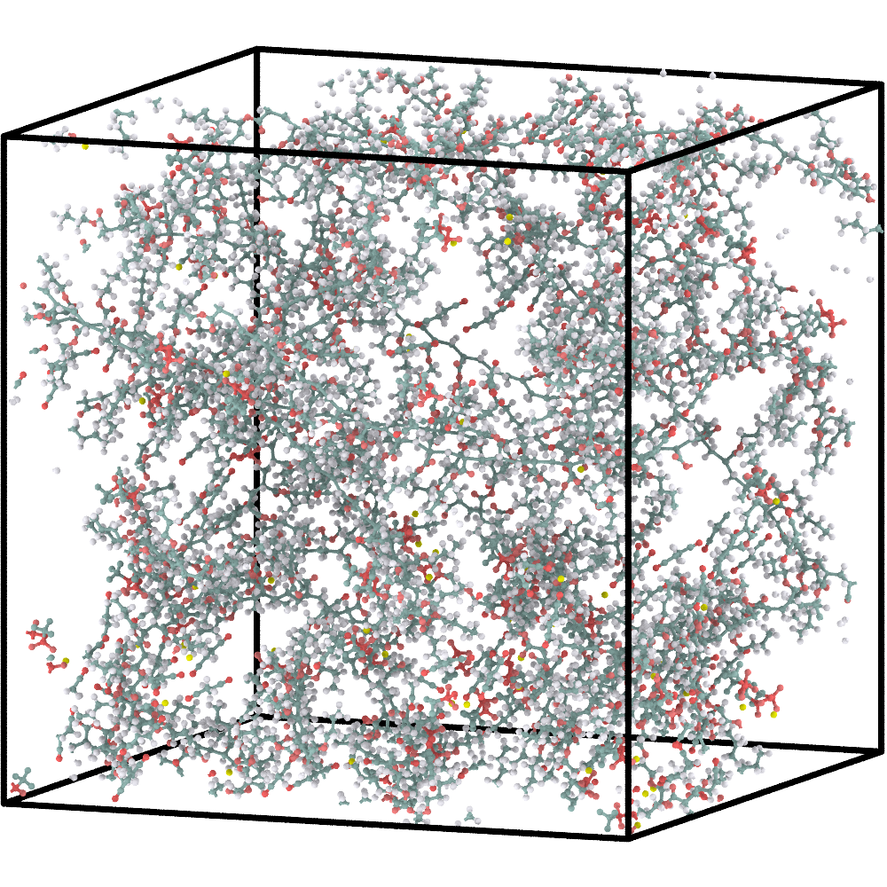
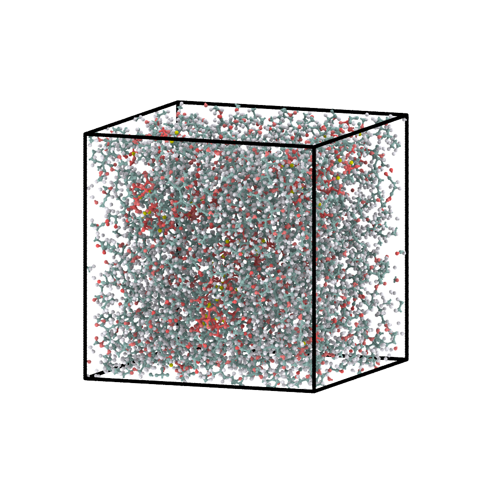

5. Multicomponent SPE: combine a reactive network and spectators¶
This reactive example combines a free reactive monomer, a PDB crosslinker, ions, and a molecular plasticizer in one construction workflow.
1. Define all components¶
The figure shows every complete molecular or structured component. The local
C SMARTS is not a separate molecule; it identifies reactive groups inside
the complete CL crosslinker.
{kind=link}

Reactive and non-reactive components in the SPE formulation.¶
{
"cg_topology_file": "reaction_final.xml",
"reaction_path_file": "reaction_path.txt",
"domd_react_dsl": "v1",
"reactants": [
{
"name": "A",
"smiles": "C=CC(=O)OCCCC",
"N": 200,
"max_valence": 2,
"activate": 4
},
{
"name": "C",
"smarts": "[C:1]([H:6])[C:2]([H:3])([H:4])[H:5]",
"max_valence": 2,
"N": 0
},
{
"name": "L",
"smiles": "[Li+]",
"N": 57,
"max_valence": 1
},
{
"name": "T",
"smiles": "C(F)(F)(F)S(=O)(=O)[N-]S(=O)(=O)C(F)(F)(F)",
"N": 57,
"max_valence": 1
},
{
"name": "S",
"smiles": "N#CCCC#N",
"N": 342,
"max_valence": 1
}
],
"fillers": [
{
"name": "CL",
"N": 4,
"file": "crosslinker.pdb",
"mappings": [
{
"cg_id": 0,
"type": "C",
"atom_idx": [
1,
24,
0,
21,
22,
23
]
},
{
"cg_id": 1,
"type": "C",
"atom_idx": [
19,
43,
20,
44,
45,
46
]
}
],
"filler_idx": [
0,
1,
2,
3
]
}
],
"reactions": [
{
"name": "A-A",
"kind": "radical",
"reactants": ["A", "A"],
"smarts": "[CH2:1]=[CH1:2].[CH2;$([CH2]=[C;H1]):3]>>[C:1][C:2][CH1:3]",
"prod_idx": [
0
],
"intrinsic_probability": 0.8,
"activation": {
"from": 0,
"to": 1
}
},
{
"name": "C-A",
"kind": "radical",
"reactants": ["C", "A"],
"smarts": "[C:1]([H:2])([H:3])[H:4].[C;$([C]=[C;H1]):5]>>[C:1]([H:2])([H:3])[C:5].[H:4]",
"prod_idx": [
0
],
"intrinsic_probability": 0.8,
"activation": {
"from": 0,
"to": 1
}
},
{
"name": "A-C",
"kind": "radical",
"reactants": ["A", "C"],
"smarts": "[CH2:1]=[CH1:2].[C:3][H:4]>>[C:1][C:2][C:3].[H:4]",
"prod_idx": [
0
],
"intrinsic_probability": 0.8,
"activation": {
"from": 0,
"to": 1
}
}
]
}
Component |
Source |
Role |
|---|---|---|
|
200 free molecules |
reactive acrylate; four sites initially active |
|
four PDB copies |
rigid crosslinker with two mapped |
|
57 free ions |
Li spectator |
|
57 free ions |
TFSI spectator |
|
342 free molecules |
succinonitrile spectator |
A-A propagates between acrylates, while C-A and A-C connect the
mapped crosslinker sites in either participant order. L, T, and S never appear
in a reaction rule and remain non-reactive during construction.
CG non-bonded parameters: L ([Li+]) is monatomic: the updated generator
uses twice the elemental vdW radius for its default sigma, skips HSP prediction,
and assigns the median normalized epsilon of the multi-atom reactants.
2. Construct and relax the CG system¶
Run this command from the extracted tutorial directory (or replace the paths
with absolute paths). --name identifies the workspace for this example;
06_spe/cg/ receives the generated initial.xml,
cg_parameters.json, and run_pygamd_polymerization.py.
chemfast prepare_cg --json 06_spe/config.json --name 06_spe
Next, switch to 06_spe/cg/ and run the generated PyGAMD script
with an interpreter that supports PyGAMD:
python run_pygamd_polymerization.py initial.xml cg_parameters.json --gpu=0
Once PyGAMD finishes, 06_spe/cg/ should contain the matching
reaction_final.xml and reaction_path.txt. Return to the extracted tutorial
directory before using the relative --name in the following command; alternatively,
provide the absolute workspace path to run the CLI from anywhere.
Initial multicomponent CG mixture |
Polymerized and pre-equilibrated CG system |
|---|---|
 |
 |
The reactive species form the network while the ions and succinonitrile remain present in the same box. Composition and reaction history should therefore be checked separately.
3. Reconstruct the atomistic system¶
chemfast reconstruct_aa --name 06_spe
The CLI reads 06_spe/config.json and the two fixed CG outputs from
06_spe/cg/, then writes the reconstructed SDF and GROMACS files to
06_spe/aa/. No CG result filenames need to be passed again.
Final CG configuration |
Energy-minimized AA reconstruction |
|---|---|
 |
ChemFAST restores the full crosslinker geometries, replays the recorded network reactions at their mapped atoms, and retains all spectator components in the AA system.
4. Briefly equilibrate the AA model¶
See AA relaxation for the external GROMACS steps used to
produce EM/EQ coordinates from the reconstructed system.gro.
Energy-minimized AA model |
AA model after the supplied short equilibration |
|---|---|
 |
The short continuation provides an initial relaxation of the reconstructed multicomponent box. Transport or thermodynamic calculations require a separate, validated equilibration and production protocol.
What to inspect¶
L and T counts remain equal and neither type enters the ReactionPath;
S remains non-reactive;
every mapped C arm refers to the intended atoms of the crosslinker PDB;
ReactionPath events are limited to
A-A,C-A, andA-C;the AA export includes every component and all files referenced by
system.top.